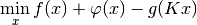
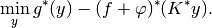
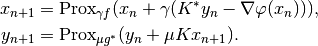
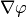
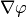

doubleprox_dc¶
-
odl.solvers.nonsmooth.difference_convex.doubleprox_dc(x, y, f, phi, g, K, niter, gamma, mu, callback=None)[source]¶ Double-proxmial gradient d.c. algorithm of Banert and Bot.
This algorithm solves a problem of the form
min_x f(x) + phi(x) - g(Kx).
Parameters: - x :
LinearSpaceElement Initial primal guess, updated in-place.
- y :
LinearSpaceElement Initial dual guess, updated in-place.
- f :
Functional Convex functional. Needs to implement
g.proximal.- phi :
Functional Convex functional. Needs to implement
phi.gradient. Convergence can be guaranteed if the gradient is Lipschitz continuous.- g :
Functional Convex functional. Needs to implement
h.convex_conj.proximal.- K :
Operator Linear operator. Needs to implement
K.adjoint- niter : int
Number of iterations.
- gamma : positive float
Stepsize in the primal updates.
- mu : positive float
Stepsize in the dual updates.
- callback : callable, optional
Function called with the current iterate after each iteration.
See also
Notes
This algorithm is proposed in [BB2016] and solves the d.c. problem

together with its Toland dual

The iterations are given by

To guarantee convergence, the parameter
 must satisfy
must satisfy
 where
where  is the Lipschitz constant of
.
is the Lipschitz constant of
.References
[BB2016] Banert, S, and Bot, R I. A general double-proximal gradient algorithm for d.c. programming. arXiv:1610.06538 [math.OC] (2016).
- x :